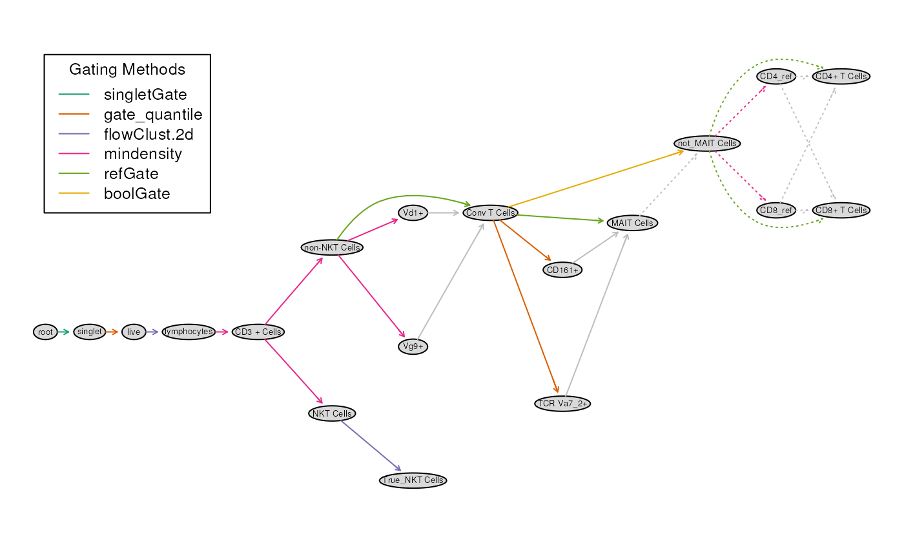
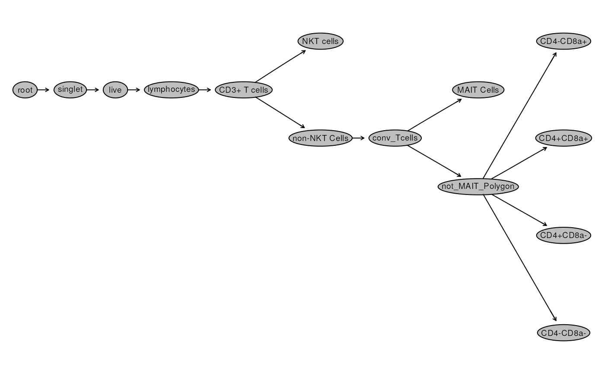
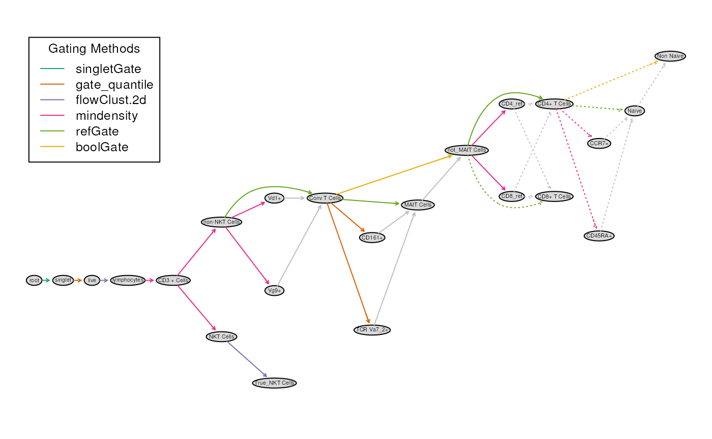
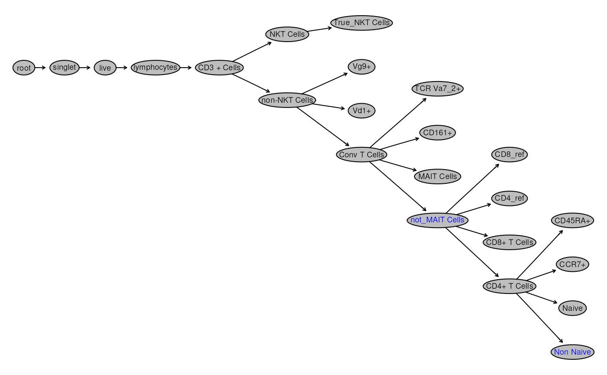
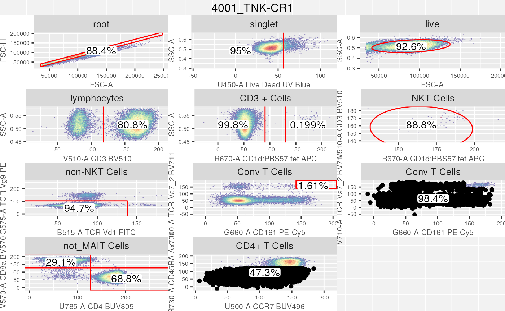

vignettes/5_Gating_gatingTemplate.Rmd
5_Gating_gatingTemplate.RmdIn Part 1 we identified
various gates available in cytoverse and how to use them.
Here, we show how users can compose a similar gating scheme by using a
gatingTemplate.
A gatingTemplate is a csv file that describes the gating
sequence and the gating methods. In the gatingTemplate csv
file, we can leverage the various automated gating methods that we have
previously seen, without explicitly requiring to script it in
R.
Let’s take a look at an example gatingTemplate
# load gatingTemplate csv
gt_file <- get_workshop_data("gating_template/")
knitr::kable(read.csv(gt_file$rpath))| alias | pop | parent | dims | gating_method | gating_args | collapseDataForGating | groupBy | preprocessing_method | preprocessing_args |
|---|---|---|---|---|---|---|---|---|---|
| singlet | + | root | FSC-A,FSC-H | singletGate | wider_gate=FALSE,prediction_level=0.95 | FALSE | NA | NA | NA |
| live | - | singlet | Live | gate_quantile | probs = 0.95 | FALSE | NA | NA | NA |
| lymphocytes | + | live | FSC-A,SSC-A | flowClust.2d | K = 1,target = c(1E5,0.5E3) | FALSE | NA | NA | NA |
| CD3 + Cells | + | lymphocytes | CD3 | mindensity | NA | NA | NA | NA | |
| non-NKT Cells | - | CD3 + Cells | CD1d | mindensity | TRUE | status | NA | NA | |
| NKT Cells | + | CD3 + Cells | CD1d | mindensity | gate_range=c(130,200),min = 130 | TRUE | status | NA | NA |
| True_NKT Cells | + | NKT Cells | CD1d,CD3 | flowClust.2d | K=2,target=c(150,175) | TRUE | status | NA | NA |
| Conv T Cells | – | non-NKT Cells | Vd1,Vg9 | mindensity | FALSE | NA | NA | NA | |
| MAIT Cells | ++ | Conv T Cells | CD161,TCR Va7_2 | gate_quantile | probs = 0.97 | TRUE | status | NA | NA |
| not_MAIT Cells | + | Conv T Cells | boolGate | !MAIT Cells | NA | NA | NA | ||
| CD4_ref | + | not_MAIT Cells | CD4 | mindensity | NA | NA | NA | ||
| CD8_ref | + | not_MAIT Cells | CD8 | mindensity | NA | NA | NA | ||
| CD4+ T Cells | +- | not_MAIT Cells | CD4,CD8 | refGate | CD4_ref:CD8_ref | NA | NA | NA | |
| CD8+ T Cells | -+ | not_MAIT Cells | CD4,CD8 | refGate | CD4_ref:CD8_ref | NA | NA | NA |
There are 10 columns that are required in a gatingTemplate csv file:
flowFrame before estimationpData slot of the GatingSet)Note: # indicates that these fields must be completed. Others can be left blank.
gatingTemplate csv
file
Above, It should be apparent that the each row of the
gatingTemplate csv file is akin to the function call to a
specific type of gate.
Let’s take a look at a simple example of the node
singlet:
alias: singlet name of the gate
pop: + indicating that we want events inside the
gate
parent: root indicating the parent
population
dims: FSC-A,FSC-H indicating the channels that the
function should use
gating_method: singletGate indicating the gating
method
gating_args:wider_gate=FALSE,prediction_level=0.95
indicating a tight gate
collapseDataForGating: FALSE indicating not to
collapse the entire GatingSet into 1 flowFrame
for estimation
groupBy: NA indicating that no grouping is to be
done
preprocessing_method: NA indicating that no
preprocessing is to be done
preprocessing_args: NA indicating that no
preprocessing argument is specified
The row for the CD4+ T Cells we note:
gating_method: refGate
gating_args: CD4_ref:CD8_ref
A refGate (reference gate) allows us to build gates by
providing references to a previously constructed gates. In this
instance, we first constructed 1D gates CD4_ref and
CD8_ref, and leveraged them to generate our
CD4+ T Cells gate.
Also note:
pop:+-
dims: CD4,CD8
Here we indicated that CD4+ T Cells are
CD4+ and CD8-.
A word of caution: We did not specify channels, rather we left
openCyto to match the dims argument with
markernames of the GatingSet. If there are similarly named
markers (CD3 and CD33) and we provide
dims: CD3, the process will not complete
successfully!
gatingTemplate tree
Let us now parse this csv file into a gatingTemplate
object
# required library
library(openCyto)
# directly read in a csv
gt <- openCyto::gatingTemplate(gt_file$rpath)Now that we have gt we should first visualize the
hierarchy to confirm that it matches our expectations!
To achieve this we use plot. As well, we will compare it to
the GatingSet we created earlier.
# show gt
plot(gt)
The tree diagram summarizes the gating path as well as the gating
methods used. Also note that the grey colored arrows
identify helper gates. These are gates which
constructed in to help construct a final gate. Above, the gate
for MAIT Cells is to be created by first constructing 2, 1D
gates TCR Va7_2+ and CD161+.
# show gs
plot(gs)
Beside the names, most nodes look the same!
Let’s append a 1 more population to this scheme: -
Non Naive defined as CCR7+CD45RA- or
CCR7-CD45RA- or CCR7-CD45RA+
To do this, we first create a Naive node and then negate
it!
# Non Naive
additional_rows <- data.frame(
alias = c("Naive", "Non Naive"),
pop = c("++","+"),
parent = c("CD4+ T Cells","CD4+ T Cells"),
dims = c("CCR7,CD45RA","CCR7,CD45RA"),
gating_method = c("mindensity", "boolGate"),
gating_args = c("","!Naive"),
collapseDataForGating = c("",""),
groupBy = c("",""),
preprocessing_method = c("",""),
preprocessing_args = c("","")
)
gt <- read.csv(gt_file$rpath) |>
rbind(additional_rows)|> data.table::as.data.table()|>
gatingTemplate()
# visualize
plot(gt)
GatingSet
Since we have saved our GatingSet let’s first remove all
the nodes including and downstream of singlet.
# clean gs
gs_pop_remove(gs, "singlet") # removes singlet and all children nodes
recompute(gs)We now use gt_gating(gt,gs) to estimate and attach gates
to the GatingSet in a single call.
# add gates defined in gatingTemplate
gt_gating(gt, gs) # simply provide the parsed gatingTemplate and the GatingSet
recompute(gs)
# visualize Gating Hierarchy
plot(gs, bool = TRUE)
We see that all the helper gates are also visualized. We can’t remove them as it would affect downstream nodes! However we can hide them.
# Too many nodes being shown, let's hide helper gates
gt_toggle_helpergates(gt,gs)
# surface MAIT Cells
## labelled as helper since not_MAIT_Cells was created using reference for MAIT Cells
gs_pop_set_visibility(gs,
c("MAIT Cells"),
TRUE)## $`4000_TNK-CR1`
## NULL
##
## $`4001_TNK-CR1`
## NULL
##
## $`4002_TNK-CR1`
## NULL
##
## $`4003_TNK-CR1`
## NULL
# visualize the full gated data
autoplot(gs[[2]], bool = TRUE, bins = 128)+
ggcyto_par_set(limits = "data")
In this section we took a brief look at how to use a
gatingTemplate csv file to compose and rapidly gate cells
within a GatingSet. The portability of the
gatingTemplate csv ensures that all users utilizing this
template file will result in the exact same GatingHierarchy
and gates.
There are additional functionalities in the openCyto
library, which we did not go over due to time constraints. We encourage
participants to explore the examples outlined here as well as
read through the vignette.